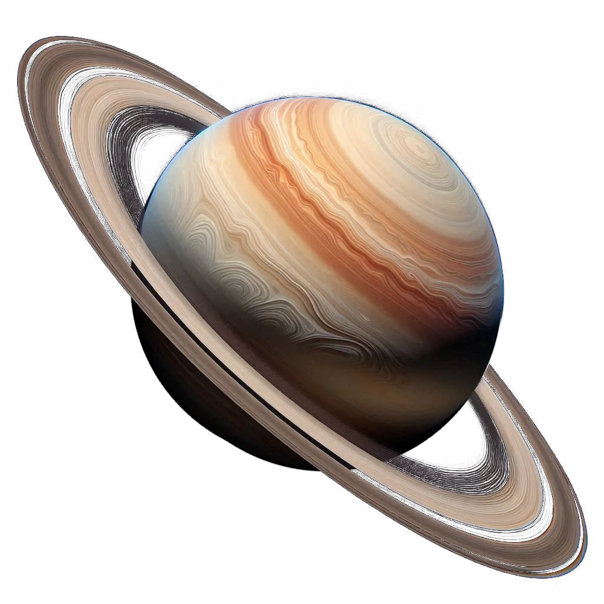

Telescope
It will host a 0.5-meter Robotic optical telescope (largest among small telescope categories) which will have a magnification of ~1000x, capabilities of resolving a structure as small as 25 km on the surface of the moon, individual rings of Saturn, detecting active galaxies up to 1.5 Giga light-years (1419 billion light years) distance